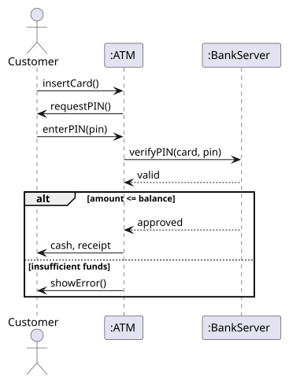

Topic 7 of 9 · Lab VIII
UML Sequence & Communication Diagrams
Lifelines, activations and the eight message types; guards and combined fragments (alt, opt, loop); turning a use case into a sequence diagram; and the equivalent communication diagram.
← → move between slides · F full screen · M slide list
Before we start
Why this matters
Your use case says “the customer withdraws cash”. But who checks the PIN? Who knows the balance? Who dispenses the money — and in what order?
Sequence diagrams answer those questions one message at a time, and every message you draw becomes an operation some class must provide. Communication diagrams show the same story as a network of objects.
Together they connect the user’s view (use cases) with the structure of the code (class diagrams).
Outline · Lab VIII
Topics in this chapter
Select a topic to jump to the slide that explains it.
Concept 1 of 12
Interaction diagrams
A use case says what the user achieves. An interaction diagram shows how objects cooperate, message by message, to make it happen.
| Diagram | Emphasises |
|---|---|
| Sequence | the time order of messages; time runs down the page |
| Communication | the links between objects; order is shown by numbers |
| Timing, interaction overview | less common; not in this course |
- Model the logic behind a complex function or procedure.
- Show the details of one use case scenario.
- Visualise how messages and tasks move between components.
- Find missing operations: every message becomes a method on the receiving class (topic 8).
Concept 2 of 12
Lifelines, actors and activations
- An actor (stick figure) is outside the system, as in the use case diagram.
- A lifeline is one participant: a box with its name, and a dashed line going down. Name it
instanceName : ClassName, e.g.atm1 : ATM, or just:ATMfor an unnamed instance. The name is underlined because it is an object. - An activation bar (thin rectangle) shows when the participant is busy handling a message.
- A note (folded-corner box) adds a comment.
- Time flows downward; horizontal position has no meaning.
Elements
Message types
| Message | Drawn as | Meaning |
|---|---|---|
| Synchronous | solid line, filled arrowhead | the sender waits for the reply (most method calls) |
| Reply / return | dashed line, open arrowhead | the answer to a synchronous call |
| Asynchronous | solid line, open arrowhead | the sender continues without waiting |
| Self | U-shaped arrow back to the same lifeline | an object calls its own operation |
| Create | dashed arrow to the new object’s box, «create» | a new object is instantiated |
| Delete | message ending in ✕ on the lifeline | the object is destroyed |
| Found | arrow from a filled dot | sender unknown (e.g. a hardware interrupt) |
| Lost | arrow to a filled dot | receiver unknown (e.g. a warning broadcast) |
Elements
Guards and combined fragments
A guard is a condition in square brackets, e.g. [balance > 0]: the message is sent only if it is true. A combined fragment is a box around part of the diagram with an operator in the top-left corner:
| Operator | Meaning | Like |
|---|---|---|
| alt | alternatives: exactly one operand runs, chosen by guards; operands separated by a dashed line | if / else |
| opt | the content runs only if the guard is true | if |
| loop | repeat while the guard holds | for / while |
| par | operands run in parallel | threads |
| ref | refers to another sequence diagram | a function call |
| break | leave the enclosing fragment | break |
alt keeps both paths together.Concept 5 of 12
The ATM withdrawal as a sequence diagram
A cleaner version of the manual’s Figure VIII.4. The manual repeats the verify–withdraw messages as 10.4–10.6 after an error; an alt (or a loop for retries) expresses this more clearly.
Interactive
Step through the messages
Concept 7 of 12
From a use case to a sequence diagram
- Pick one use case and one scenario (usually the main success scenario).
- List the participants: the actor, a boundary object (screen, ATM), a control object (the logic, e.g. BankServer or TransactionController) and entity objects (Account, Card).
- Place the actor on the left and participants in the order they first appear.
- Turn each step of the scenario into a message; name it like a method call with parameters:
withdraw(amount). - Add replies where a value comes back.
- Wrap alternatives in
alt, optional parts inopt, repetition inloop. - Check every message has a matching operation in the class diagram.
Concept 8 of 12
Communication diagrams
A communication diagram (called a collaboration diagram in UML 1) shows the same interaction as a sequence diagram, but arranged as a network of objects. Lines are links; messages are written beside the links with a sequence number and a small arrow for direction.
- Numbers give the order: 1, 2, 3 … ; nested calls use decimals: 8.1 happens inside 8.
- Guards and loops can be written in the label:
2 [amount ≤ balance]: debit(amount),3*: scan(book). - Good for seeing which objects must know each other — useful for the class diagram.
Communication diagrams
Sequence or communication?
| Sequence diagram | Communication diagram | |
|---|---|---|
| Shows best | the order of messages over time | the structure of links between objects |
| Order | top to bottom — easy to read | by sequence numbers — harder to follow |
| Alternatives and loops | combined fragments (alt, opt, loop) | guards and * in labels |
| Space | wide with many objects, long with many messages | compact |
| Use it for | explaining a scenario step by step | checking which classes need associations |
Tools
Drawing tools
In Visual Paradigm (online or desktop): create a Sequence Diagram, add an Actor and Lifelines from the toolbar, then drag from a lifeline’s resource icon to create a message to another lifeline. Right-click a message to change its type; select several messages and choose Create combined fragment for alt, opt or loop.
StarUML, Lucidchart and draw.io work the same way. PlantUML lets you type it, and draws the diagram for you:
@startuml actor Customer participant ":ATM" as ATM participant ":BankServer" as Bank Customer -> ATM : insertCard() ATM -> Customer : requestPIN() Customer -> ATM : enterPIN(pin) ATM -> Bank : verifyPIN(card, pin) Bank --> ATM : valid alt amount <= balance Bank --> ATM : approved ATM -> Customer : cash, receipt else insufficient funds ATM -> Customer : showError() end @enduml

Concept 11 of 12
Common mistakes
| Mistake | Fix |
|---|---|
| The actor talks straight to the database or entity objects | go through a boundary and control object |
| Messages written as sentences (“the ATM checks the PIN”) | write operation calls: verifyPIN(card, pin) |
| No reply for a value that is used later | add a dashed reply arrow |
| Two diagrams for success and failure | one diagram with an alt fragment |
| Lifeline names like “ATM system” | name objects and classes: :ATM |
| Messages that do not exist as operations in the class diagram | add the operation, or rename the message |
| Showing a whole system in one diagram | one diagram per use case scenario |
Your turn
Your turn: Library Management System
- Choose one use case from your topic-6 diagram, e.g. Borrow book or Return book.
- Write its main scenario as numbered steps.
- Decide the participants (actor, boundary, control, entities such as Member, Book, Loan).
- Turn each step into a message; add replies.
- Where does the scenario branch? (book already reserved, overdue fine) →
altoropt. - Draw the communication diagram with the same numbers.
Worked example 1 of 3
Worked example 1
Show the solution
- Librarian → :LibrarySystem :
scan(bookId) - :LibrarySystem → :Loan :
findActive(bookId), replyloan - :LibrarySystem → :Loan :
markReturned() opt [loan is overdue]: :LibrarySystem → :LibrarySystem :computeFine()(self), then :LibrarySystem → Librarian :showFine(amount)
Worked example 2 of 3
Worked example 2
Show the solution
loop fragment with a guard such as [attempts < 3 and PIN not valid], containing enterPIN and verifyPIN; after it, an opt [attempts = 3] with retainCard().Worked example 3 of 3
Worked example 3
Show the solution
Practice
Practice (1 of 2)
Try each one on paper first, then check your answer.
Show the answer
c1 : Customer on a lifeline mean?Show the answer
Show the answer
opt with the guard [fine > 0].Practice
Practice (2 of 2)
Try each one on paper first, then check your answer.
Show the answer
Show the answer
Show the answer
Check yourself
Quiz
Resources
Further learning
Hand-picked material to go deeper. Links open in a new tab.
Summary
Summary
- Sequence diagrams show messages between lifelines in time order; communication diagrams show the same messages on links, numbered.
- Lifelines are named instance : Class; activation bars show when an object is busy.
- Synchronous = filled head; reply = dashed; asynchronous = open head; plus self, create, delete, found and lost.
- Guards [condition] and fragments alt, opt, loop, par, ref model logic.
- Build one diagram per use case scenario, via boundary, control and entity objects.
- Every message must exist as an operation in the class diagram.